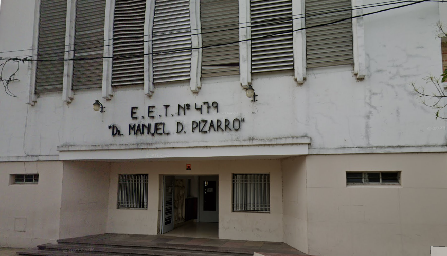

Para poder ver la caracteristicas de la escuela que te interesa es tan simple como darle a descargar, y se descargara el documento con toda la informacion de la escuela
En caso de datos Erroneos, se tiene los nombres y contacto con los creadores
Educación Técnico-Profesional (EETP) Brinda una formación práctica y teórica que prepara para un oficio o profesión técnica o Educación Común (Secundaria Orientada) Está centrada en la formación académica general. Al finalizar, se otorga el título de Bachiller en… (por ejemplo, Ciencias Sociales, Ciencias Naturales, Economía y Administración, Arte)
Pensar en tus intereses: si te gusta la práctica, la tecnología o un oficio específico, una escuela técnica puede ser ideal. Si preferís una formación más general o enfocada en arte, ciencias o humanidades, la secundaria orientada es tu mejor opción.
Con título de Técnico: podés ingresar a la universidad, a institutos terciarios, o bien trabajar en el área de tu especialidad técnica. También podés rendir exámenes para obtener matrícula profesional según el oficio (ej. Maestro Mayor de Obras, Técnico Electromecánico). Con título de Bachiller: podés continuar estudios superiores en cualquier área (carreras universitarias, profesorados, tecnicaturas no técnicas). Es un camino más flexible
Las fechas de inscripción para primer año de secundaria, suelen abrirse entre septiembre y octubre para preinscripciones, y continuar en noviembre con la confirmación de vacantes. En el caso de las escuelas técnicas, algunas comienzan antes sus procesos de inscripción debido a la alta demanda.